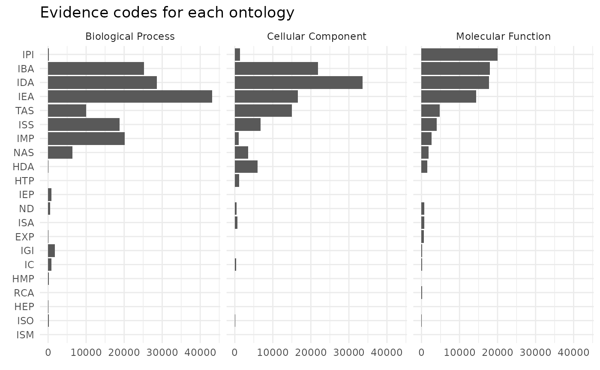
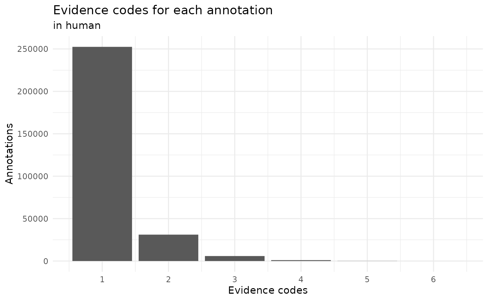
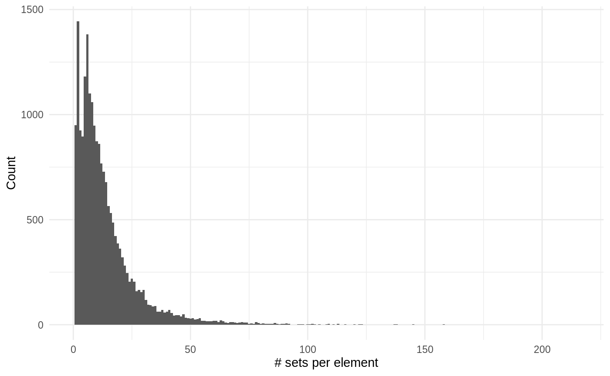
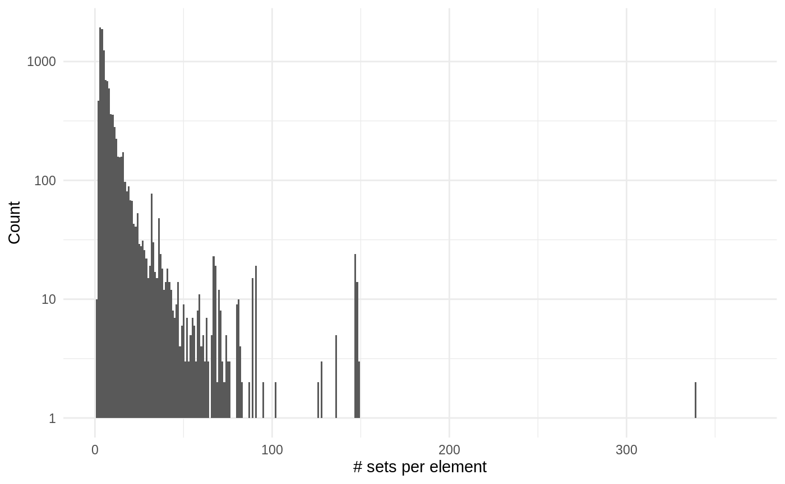
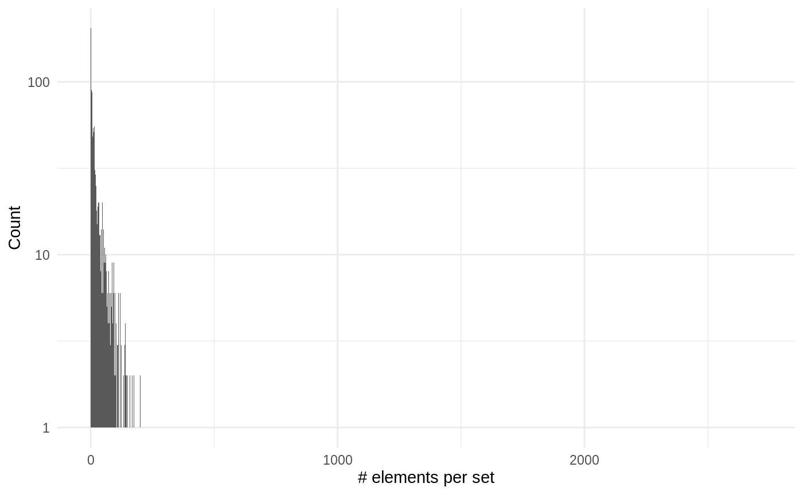

vignettes/advanced.Rmd
advanced.RmdAbstract
This vignette assumes you are familiar with set operations from the basic vignette.To show compatibility with tidy workflows we will use magrittr pipe operator and the dplyr verbs.
We will explore the genes related with GO.
# We load some libraries
library("org.Hs.eg.db")
library("GO.db")
library("ggplot2")
# Prepare the data
h2GO_TS <- tidySet(org.Hs.egGO)
h2GO <- as.data.frame(org.Hs.egGO)We can now explore if there are differences in evidence usage for each ontology in GO:
library("forcats")
h2GO %>%
group_by(Evidence, Ontology) %>%
count(name = "Freq") %>%
ungroup() %>%
mutate(Evidence = fct_reorder2(Evidence, Ontology, -Freq)) %>%
ggplot() +
geom_col(aes(Evidence, Freq)) +
facet_grid(~Ontology) +
theme_bw() +
coord_flip() +
xlab("Evidence")
This graph doesn’t consider that some relationships are better annotated than other:
h2GO_TS %>%
relations() %>%
group_by(elements, sets) %>%
count(sort = TRUE) %>%
ggplot() +
geom_histogram(aes(n), binwidth = 1) +
theme_minimal() +
# scale_y_log10() +
labs(x = "Evidence codes",
title = "Evidence codes for each relation between GO and a gene",
subtitle = "in human annotation")
We can see that mostly all the annotations are done with a single evidence code. So far we have explored the code that it is related to a gene but how many genes don’t have any annotation?
# Add all the genes and GO terms
library("GO.db")
h2GO_TS <- add_elements(h2GO_TS, keys(org.Hs.eg.db)) %>%
add_sets(grep("^GO:", keys(GO.db), value = TRUE))
sizes_element <- element_size(h2GO_TS) %>%
arrange(desc(size))
sum(sizes_element$size == 0)
#> [1] 40729
sum(sizes_element$size != 0)
#> [1] 20488
sizes_set <- set_size(h2GO_TS) %>%
arrange(desc(size))
sum(sizes_set$size == 0)
#> [1] 26872
sum(sizes_set$size != 0)
#> [1] 18177So we can see that both there are more genes without annotation and more GO terms without a (direct) gene annotated.
sizes_element %>%
filter(size != 0) %>%
ggplot() +
geom_histogram(aes(size), binwidth = 1) +
theme_minimal() +
labs(x = "# sets per element", y = "Count")
sizes_set %>%
filter(size != 0) %>%
ggplot() +
geom_histogram(aes(size), binwidth = 1) +
theme_minimal() +
labs(x = "# elements per set", y = "Count")
As you can see on the second plot we have very large values but that are on associated on many genes:
head(sizes_set, 10)
#> sets size probability Ontology
#> 1 GO:0005515 9690 1 MF
#> 2 GO:0005634 5626 1 CC
#> 3 GO:0005829 5026 1 CC
#> 4 GO:0005886 4481 1 CC
#> 5 GO:0005737 4437 1 CC
#> 6 GO:0016021 3638 1 CC
#> 7 GO:0005654 3168 1 CC
#> 8 GO:0046872 2292 1 MF
#> 9 GO:0070062 2163 1 CC
#> 10 GO:0016020 1987 1 CCNow we will repeat the same analysis with pathways:
# We load some libraries
library("reactome.db")
# Prepare the data (is easier, there isn't any ontoogy or evidence column)
h2p <- as.data.frame(reactomeEXTID2PATHID)
colnames(h2p) <- c("sets", "elements")
# Filter only for human pathways
h2p <- h2p[grepl("^R-HSA-", h2p$sets), ]
# There are duplicate relations with different evidence codes!!:
summary(duplicated(h2p[, c("elements", "sets")]))
#> Mode FALSE TRUE
#> logical 111759 11951
h2p <- unique(h2p)
# Create a tidySet and
h2p_TS <- tidySet(h2p) %>%
# Add all the genes
add_elements(keys(org.Hs.eg.db))Now that we have everything ready we can start measuring some things…
sizes_element <- element_size(h2p_TS) %>%
arrange(desc(size))
sum(sizes_element$size == 0)
#> [1] 50563
sum(sizes_element$size != 0)
#> [1] 10736
sizes_set <- set_size(h2p_TS) %>%
arrange(desc(size))We can see there are more genes without pathways than genes with pathways.
sizes_element %>%
filter(size != 0) %>%
ggplot() +
geom_histogram(aes(size), binwidth = 1) +
scale_y_log10() +
theme_minimal() +
labs(x = "# sets per element", y = "Count")
#> Warning: Transformation introduced infinite values in continuous y-axis
#> Warning: Removed 254 rows containing missing values (geom_bar).
sizes_set %>%
ggplot() +
geom_histogram(aes(size), binwidth = 1) +
scale_y_log10() +
theme_minimal() +
labs(x = "# elements per set", y = "Count")
#> Warning: Transformation introduced infinite values in continuous y-axis
#> Warning: Removed 2509 rows containing missing values (geom_bar).
As you can see on the second plot we have very large values but that are on associated on many genes:
#> R Under development (unstable) (2020-01-24 r77709)
#> Platform: x86_64-pc-linux-gnu (64-bit)
#> Running under: Ubuntu 16.04.6 LTS
#>
#> Matrix products: default
#> BLAS: /home/travis/R-bin/lib/R/lib/libRblas.so
#> LAPACK: /home/travis/R-bin/lib/R/lib/libRlapack.so
#>
#> locale:
#> [1] LC_CTYPE=en_US.UTF-8 LC_NUMERIC=C
#> [3] LC_TIME=en_US.UTF-8 LC_COLLATE=en_US.UTF-8
#> [5] LC_MONETARY=en_US.UTF-8 LC_MESSAGES=en_US.UTF-8
#> [7] LC_PAPER=en_US.UTF-8 LC_NAME=C
#> [9] LC_ADDRESS=C LC_TELEPHONE=C
#> [11] LC_MEASUREMENT=en_US.UTF-8 LC_IDENTIFICATION=C
#>
#> attached base packages:
#> [1] parallel stats4 stats graphics grDevices utils datasets
#> [8] methods base
#>
#> other attached packages:
#> [1] reactome.db_1.70.0 forcats_0.4.0 ggplot2_3.2.1
#> [4] GO.db_3.10.0 org.Hs.eg.db_3.10.0 AnnotationDbi_1.49.0
#> [7] IRanges_2.21.3 S4Vectors_0.25.11 Biobase_2.47.2
#> [10] BiocGenerics_0.33.0 BaseSet_0.0.10 dplyr_0.8.3
#>
#> loaded via a namespace (and not attached):
#> [1] tidyselect_0.2.5 xfun_0.12 purrr_0.3.3
#> [4] reshape2_1.4.3 colorspace_1.4-1 vctrs_0.2.1
#> [7] htmltools_0.4.0 yaml_2.2.0 blob_1.2.1
#> [10] rlang_0.4.3 pkgdown_1.4.1 pillar_1.4.3
#> [13] glue_1.3.1 withr_2.1.2 DBI_1.1.0
#> [16] bit64_0.9-7 plyr_1.8.5 lifecycle_0.1.0
#> [19] stringr_1.4.0 munsell_0.5.0 gtable_0.3.0
#> [22] memoise_1.1.0 evaluate_0.14 labeling_0.3
#> [25] knitr_1.27 Rcpp_1.0.3 backports_1.1.5
#> [28] scales_1.1.0 BiocManager_1.30.10 desc_1.2.0
#> [31] farver_2.0.3 fs_1.3.1 bit_1.1-15.1
#> [34] BiocStyle_2.15.5 digest_0.6.23 stringi_1.4.5
#> [37] rprojroot_1.3-2 grid_4.0.0 tools_4.0.0
#> [40] magrittr_1.5 lazyeval_0.2.2 tibble_2.1.3
#> [43] RSQLite_2.2.0 crayon_1.3.4 pkgconfig_2.0.3
#> [46] zeallot_0.1.0 MASS_7.3-51.5 ellipsis_0.3.0
#> [49] assertthat_0.2.1 rmarkdown_2.1 R6_2.4.1
#> [52] compiler_4.0.0